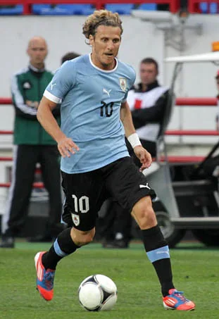

The profile
Diego Forlán
Diego Forlán was born in Montevideo into a football family; his father, Pablo, also represented Uruguay. He began his senior career in South America before moving to England.
He rebuilt his reputation at Villarreal and Atlético Madrid after an early spell at Manchester United. He can strike powerfully with either foot and is willing to shoot from distance, making him dangerous when a defence gives him little space. He also drops deeper to link Uruguay's attacks.
Forlán was the attacking leader of Uruguay's run to fourth place at the 2010 World Cup. His five goals included strikes in the knockout rounds, while his passing and set pieces helped a compact team threaten stronger opponents. Uruguay lost a close semi-final to the Netherlands and the third-place match to Germany, but his overall play earned the tournament's best player award.
2002Korea + Japan
Group stage
Group A Senegal3 : 3Uruguay
- Khalilou FADIGA20′ · pen.
- Bouba DIOP26′
- Bouba DIOP38′
- Richard MORALES45′
- Diego FORLAN69′
- Alvaro RECOBA88′ · pen.
Senegalhome
Starting lineup
- Tony SYLVA
- Omar DAF
- Papa Malick DIOP
- Alassane NDOUR
- Aliou CISSE
- Lamine DIATTA
- Ferdinand COLY
- Khalilou FADIGA
- Bouba DIOP
- Henri CAMARA
- El Hadji DIOUF
Substitutions
- 63′Habib BEYE on · Ferdinand COLY off
- 67′Moussa NDIAYE on · Henri CAMARA off
- 76′Amdy FAYE on · Alassane NDOUR off
Uruguayaway
Starting lineup
- Fabian CARINI
- Alejandro LEMBO
- Paolo MONTERO
- Dario RODRIGUEZ
- Gonzalo SORONDO
- Pablo GARCIA
- Gustavo VARELA
- Marcelo ROMERO
- Dario SILVA
- Sebastian ABREU
- Alvaro RECOBA
Substitutions
- 32′Mario REGUEIRO on · Gonzalo SORONDO off
- 45+1′Richard MORALES on · Sebastian ABREU off
- 45+1′Diego FORLAN on · Marcelo ROMERO off
2010South Africa
Fourth place
Group A Uruguay0 : 0France
Uruguayhome
Starting lineup
- Fernando MUSLERA
- Diego LUGANO
- Diego GODIN
- Mauricio VICTORINO
- Maximiliano PEREIRA
- Alvaro PEREIRA
- Diego PEREZ
- Egidio AREVALO
- Ignacio González
- Luis SUAREZ
- Diego FORLAN
Substitutions
- 62′Nicolas LODEIRO on · Ignacio González off
- 73′Sebastian ABREU on · Luis SUAREZ off
- 86′Sebastian EGUREN on · Diego PEREZ off
Franceaway
Starting lineup
- Hugo Lloris
- Bacary SAGNA
- Eric ABIDAL
- William GALLAS
- Patrice EVRA
- Yoann GOURCUFF
- Jeremy TOULALAN
- Abou DIABY
- Franck RIBÉRY
- Sidney GOVOU
- Nicolas ANELKA
Substitutions
- 71′Thierry HENRY on · Nicolas ANELKA off
- 74′Florent MALOUDA on · Yoann GOURCUFF off
- 84′GIGNAC Andre Pierre on · Sidney GOVOU off
Group A South Africa0 : 3Uruguay
- Diego FORLAN23′
- Diego FORLAN79′ · pen.
- Alvaro PEREIRA90+4′
South Africahome
Starting lineup
- Itumeleng KHUNE
- Siboniso GAXA
- Tsepo MASILELA
- Aaron MOKOENA
- Bongani KHUMALO
- Siphiwe TSHABALALA
- Steven PIENAAR
- Teko MODISE
- Reneilwe LETSHOLONYANE
- Kagisho DIKGACOI
- Katlego MPHELA
Substitutions
- 56′Surprise MORIRI on · Reneilwe LETSHOLONYANE off
- 78′Moneeb JOSEPHS on · Steven PIENAAR off
Uruguayaway
Starting lineup
- Fernando MUSLERA
- Diego LUGANO
- Diego GODIN
- Jorge FUCILE
- Maximiliano PEREIRA
- Alvaro PEREIRA
- Diego PEREZ
- Egidio AREVALO
- Edinson CAVANI
- Luis SUAREZ
- Diego FORLAN
Substitutions
- 70′Álvaro FERNÁNDEZ on · Jorge FUCILE off
- 88′Sebastián FERNÁNDEZ on · Edinson CAVANI off
- 89′Walter GARGANO on · Diego PEREZ off
Group A Mexico0 : 1Uruguay
- Luis SUAREZ42′
Mexicohome
Starting lineup
- Oscar PEREZ
- Francisco RODRIGUEZ
- Carlos SALCIDO
- Rafael MARQUEZ
- Ricardo OSORIO
- Hector MORENO
- Gerardo TORRADO
- Andres GUARDADO
- Guillermo FRANCO
- Cuauhtemoc BLANCO
- Giovani DOS SANTOS
Substitutions
- 45′Pablo BARRERA on · Andres GUARDADO off
- 56′Israel CASTRO on · Hector MORENO off
- 62′Javier HERNANDEZ on · Cuauhtemoc BLANCO off
Uruguayaway
Starting lineup
- Fernando MUSLERA
- Diego LUGANO
- Jorge FUCILE
- Mauricio VICTORINO
- Maximiliano PEREIRA
- Alvaro PEREIRA
- Diego PEREZ
- Egidio AREVALO
- Edinson CAVANI
- Luis SUAREZ
- Diego FORLAN
Substitutions
- 76′Andres SCOTTI on · Alvaro PEREIRA off
- 84′Álvaro FERNÁNDEZ on · Luis SUAREZ off
Round of 16 Uruguay2 : 1South Korea
- Luis SUAREZ7′
- Luis SUAREZ79′
- LEE Chungyong67′
Uruguayhome
Starting lineup
- Fernando MUSLERA
- Diego LUGANO
- Diego GODIN
- Jorge FUCILE
- Maximiliano PEREIRA
- Alvaro PEREIRA
- Diego PEREZ
- Egidio AREVALO
- Edinson CAVANI
- Luis SUAREZ
- Diego FORLAN
Substitutions
- 45′Mauricio VICTORINO on · Diego GODIN off
- 73′Nicolas LODEIRO on · Alvaro PEREIRA off
- 83′Álvaro FERNÁNDEZ on · Luis SUAREZ off
South Koreaaway
Starting lineup
- JUNG Sungryong
- CHO Yong Hyung
- LEE Youngpyo
- LEE Jung Soo
- CHA Duri
- PARK Jisung
- KIM Jung Woo
- KIM Jae Sung
- KI Sungyueng
- LEE Chungyong
- PARK Chuyoung
Substitutions
- 60′LEE Donggook on · KIM Jae Sung off
- 84′YEOM Ki Hun on · KI Sungyueng off
Quarterfinal Uruguay1 : 1Ghana
- Diego FORLAN54′
- Sulley MUNTARI45+1′
Uruguayhome
Starting lineup
- Fernando MUSLERA
- Diego LUGANO
- Jorge FUCILE
- Mauricio VICTORINO
- Maximiliano PEREIRA
- Diego PEREZ
- Egidio AREVALO
- Álvaro FERNÁNDEZ
- Edinson CAVANI
- Luis SUAREZ
- Diego FORLAN
Substitutions
- 37′Andres SCOTTI on · Diego LUGANO off
- 45′Nicolas LODEIRO on · Álvaro FERNÁNDEZ off
- 75′Sebastian ABREU on · Edinson CAVANI off
Ghanaaway
Starting lineup
- Richard KINGSON
- Hans SARPEI
- John PANTSIL
- John MENSAH
- Samuel INKOOM
- Isaac VORSAH
- Anthony ANNAN
- Sulley MUNTARI
- Kwadwo ASAMOAH
- Asamoah GYAN
- Kevin-Prince Boateng
Substitutions
- 73′Stephen APPIAH on · Samuel INKOOM off
- 87′Dominic ADIYIAH on · Sulley MUNTARI off
Semifinal Uruguay2 : 3Netherlands
- Diego FORLAN40′
- Maximiliano PEREIRA90+1′
- Giovanni VAN BRONCKHORST17′
- Wesley SNEIJDER69′
- Arjen ROBBEN72′
Uruguayhome
Starting lineup
- Fernando MUSLERA
- Diego GODIN
- Mauricio VICTORINO
- Maximiliano PEREIRA
- Martin CACERES
- Walter GARGANO
- Alvaro PEREIRA
- Diego PEREZ
- Egidio AREVALO
- Edinson CAVANI
- Diego FORLAN
Substitutions
- 77′Sebastian ABREU on · Alvaro PEREIRA off
- 83′Sebastián FERNÁNDEZ on · Diego FORLAN off
Netherlandsaway
Starting lineup
- Maarten Stekelenburg
- John HEITINGA
- Joris MATHIJSEN
- Giovanni VAN BRONCKHORST
- Khalid BOULAHROUZ
- Mark VAN BOMMEL
- Wesley SNEIJDER
- Demy DE ZEEUW
- Dirk KUYT
- Robin VAN PERSIE
- Arjen ROBBEN
Substitutions
- 45′Rafael VAN DER VAART on · Demy DE ZEEUW off
- 88′Eljero ELIA on · Arjen ROBBEN off
Third-place match Uruguay2 : 3Germany
- Edinson CAVANI27′
- Diego FORLAN51′
- MUELLER Thomas18′
- Marcell JANSEN55′
- Sami KHEDIRA81′
Uruguayhome
Starting lineup
- Fernando MUSLERA
- Diego LUGANO
- Diego GODIN
- Jorge FUCILE
- Maximiliano PEREIRA
- Martin CACERES
- Diego PEREZ
- Egidio AREVALO
- Edinson CAVANI
- Luis SUAREZ
- Diego FORLAN
Substitutions
- 76′Walter GARGANO on · Diego PEREZ off
- 88′Sebastian ABREU on · Edinson CAVANI off
Germanyaway
Starting lineup
- Hans Joerg BUTT
- Arne FRIEDRICH
- Dennis AOGO
- Per MERTESACKER
- BOATENG Jerome
- Marcell JANSEN
- Sami KHEDIRA
- Bastian SCHWEINSTEIGER
- Mesut OEZIL
- MUELLER Thomas
- CACAU
Substitutions
- 72′Stefan KIESSLING on · CACAU off
- 80′Toni Kroos on · Marcell JANSEN off
- 90′Serdar TASCI on · Mesut OEZIL off
2014Brazil
Round of 16
Group D Uruguay1 : 3Costa Rica
- Edinson CAVANI23′ · pen.
- Joel CAMPBELL53′
- Oscar DUARTE57′
- Marcos URENA83′
Uruguayhome
Starting lineup
- Fernando MUSLERA
- Diego LUGANO
- Diego GODIN
- Maximiliano PEREIRA
- Martin CACERES
- Walter GARGANO
- Cristian RODRIGUEZ
- Egidio AREVALO
- Diego FORLAN
- Cristhian STUANI
- Edinson CAVANI
Substitutions
- 59′Nicolas LODEIRO on · Diego FORLAN off
- 59′Alvaro GONZALEZ on · Walter GARGANO off
- 75′Abel HERNANDEZ on · Cristian RODRIGUEZ off
Costa Ricaaway
Starting lineup
- Keylor NAVAS
- Giancarlo GONZALEZ
- Michael UMANA
- Oscar DUARTE
- Junior DIAZ
- Cristian GAMBOA
- Celso BORGES
- Christian BOLANOS
- Yeltsin TEJEDA
- Joel CAMPBELL
- Bryan RUIZ
Substitutions
- 73′Jose CUBERO on · Yeltsin TEJEDA off
- 82′Marcos URENA on · Bryan RUIZ off
- 88′Michael BARRANTES on · Christian BOLANOS off
Round of 16 Colombia2 : 0Uruguay
- James RODRIGUEZ27′
- James RODRIGUEZ49′
Colombiahome
Starting lineup
- David OSPINA
- Cristian ZAPATA
- Mario YEPES
- Pablo ARMERO
- Juan ZUNIGA
- Carlos SANCHEZ
- Abel AGUILAR
- James RODRIGUEZ
- Juan CUADRADO
- Teofilo GUTIERREZ
- Jackson MARTINEZ
Substitutions
- 67′Alexander MEJIA on · Teofilo GUTIERREZ off
- 80′Fredy GUARIN on · Juan CUADRADO off
- 84′Adrian RAMOS on · James RODRIGUEZ off
Uruguayaway
Starting lineup
- Fernando MUSLERA
- Diego GODIN
- Jose GIMENEZ
- Maximiliano PEREIRA
- Martin CACERES
- Alvaro PEREIRA
- Cristian RODRIGUEZ
- Egidio AREVALO
- Alvaro GONZALEZ
- Diego FORLAN
- Edinson CAVANI
Substitutions
- 52′Cristhian STUANI on · Diego FORLAN off
- 52′Gaston RAMIREZ on · Alvaro PEREIRA off
- 66′Abel HERNANDEZ on · Alvaro GONZALEZ off